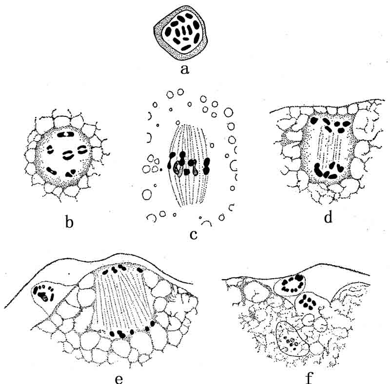

在精子发生过程中由于偶尔损失一条染色体所引起的性别决定
在雌雄同体的动物当中看不到性别决定机制，也不应该有这种机制，因为所有的个体都完全一样，都有精巢和卵巢。在一种线虫Angiostomum nigrovenosum里，雌雄同体世代同雌雄异体世代互相交替。Boveri和Schleip证明，当雌雄同体世代的生殖细胞成熟时（图135），往往损失两条X染色体（滞留在分裂平面上），因而产生两种精子，一种有五条染色体，另一种有六条染色体。当同一雌虫的卵子成熟时，12条染色体两两接合，形成六条二价染色体（图136）。第一次分裂时，六条进入第一极体，另六条仍留在卵内。卵子内六条染色体分裂，六条子染色体进入第二极体，卵子内留下六条子染色体，其中各有一条X染色体。卵子同六条染色体的精子受精，发育成雌虫，卵子同五条染色体的精子受精，发育成雄虫。这里，在细胞分裂中的一件偶然事件，造成了性别决定机制。

图135 管口属线虫（Angiostomum nigrovenosum）精细胞的两次成熟分裂（上行示第一次成熟分裂）。第二次分裂时（下行），有一条X染色体滞留在分裂平面上（仿Schleip）

图136 Angiostomum nigrovenosum卵子的两次成熟分裂。卵核内留下六条染色体（仿Schleip）